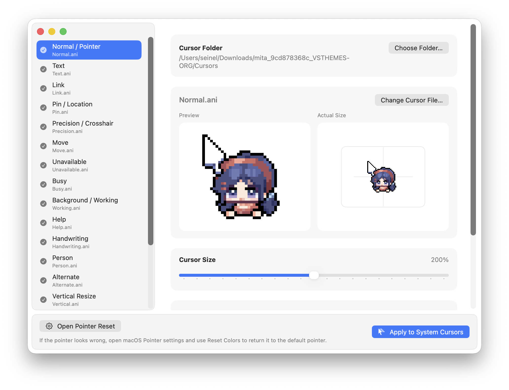

Import and preview Windows .cur and .ani cursor packs.
Apply your chosen cursors directly to macOS system cursors.

Drop in a cursor pack folder, or choose only the .cur and .ani files you want.
Cursie uses names like Normal, Text, and Link to match files with arrow, text, and link cursors.
See how each cursor looks and moves before applying it. You can replace only the cursors you want to change.
Click Apply to change cursors across your Mac. You can quit Cursie afterward—the new cursors stay active.
No. You can quit Cursie after applying your cursors. When you restart your Mac, the last cursor pack you chose is applied again at sign-in.
Yes. You can import Windows .cur and .ani files, review their intended cursor use, and apply them directly.
Yes. You can preview animated .ani cursors in motion before applying them to macOS.
Choose “Reset Default Cursor in macOS Settings” in Cursie, then click “Reset Colors” in the Pointer settings that open. Cursie disables automatic reapply at login; macOS completes the reset when you click its button.
A checkmark now appears when your cursor has been applied. Click outside the message to close it.
Cursie now recognizes more .cur and .ani files and maps common filenames more accurately. Returning to the default cursor also turns off automatic reapply at login.
Animated cursors now play at the speed specified by the file.
License information for the open-source software used by Cursie is now included in the app.
The update window follows the language selected in macOS.
Fixed an issue that left Cursie in the Dock after changing cursors. Your last cursor pack now returns when you restart your Mac.
Made the window easier to scan and fixed colors that looked out of place in dark mode.
Changed the app name and icon, added direct cursor changes, and made new versions available from within the app.
Recentered the bundled default arrow cursor. Fixed preview appearing slightly shifted.
Fixed a red dot that appeared in some .cape files and made longer .ani animations play more smoothly.
Added Windows cursor pack import and cursor previews.